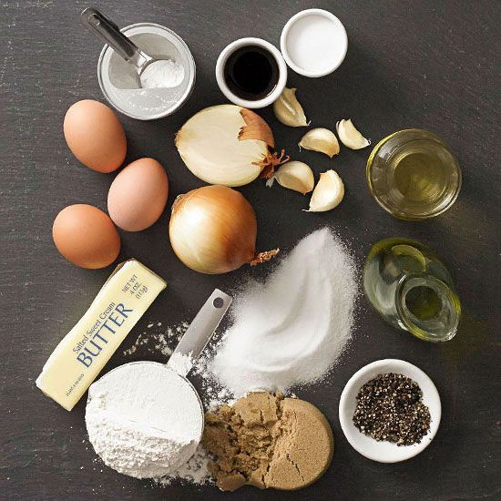
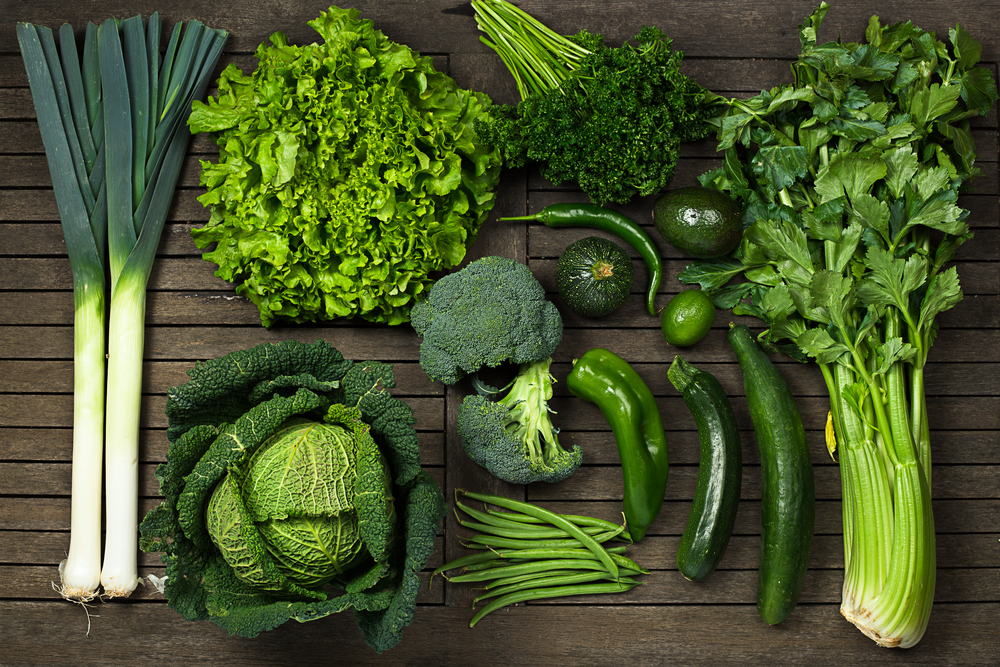

Our foods are mostly prepared from fresh local ingredients, ensuring high nutritional value and taste. It ensures that you get the best of both worlds - flavor and health.

Ingredients
Our ingredients are mainly fish, leafy vegetables, herbs and spices, which are known for their health benefits and nutritional value.

Nutrition
Our recipes are designed to be nutritious and balanced, providing essential vitamins and minerals to support your health.

Health
Green leafy vegetables and herbs are known for their health benefits, and our recipes incorporate these ingredients to promote well-being.